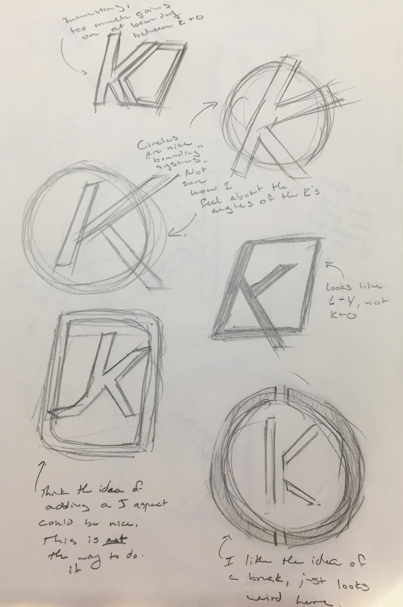

Personal Logo
The Concept
The idea was to create, from the ground up, a personal logo for myself.
My goal for this project was to create something that could become
a unique and recognizable simble which could be used on a website,
or a resume, or simply a sticker for my laptop. There were a couple guidelines
that I set for myself in order to create what I believed would be a successful
logo.
Initial Sketches
 To the right is a selcection of the sketches that I made for my logo. The main aspect that I expiremented with was how to deal with the 'O'. Whether it was a feature that surrounded the rest of the logo, or whether it was in the same 'plane' as the 'K', this design decision was a major factor in the end product. I ended up deciding to go with a bounding 'O' as I felt that it would give the design a sense of completeness while still staying true to the ideas that I set for myself at the beginning.
Another important decision that I worked on after deciding to go with an all encompasing 'O' was whether there should be aspects to the design that would go outside of the bounding shape. This came about as I felt that simply placing a 'K' in the circle would leave the design feeling disjointed and incomplete. In the end, I decided to go with a negative shape to break up both the 'K' as well as the 'O'